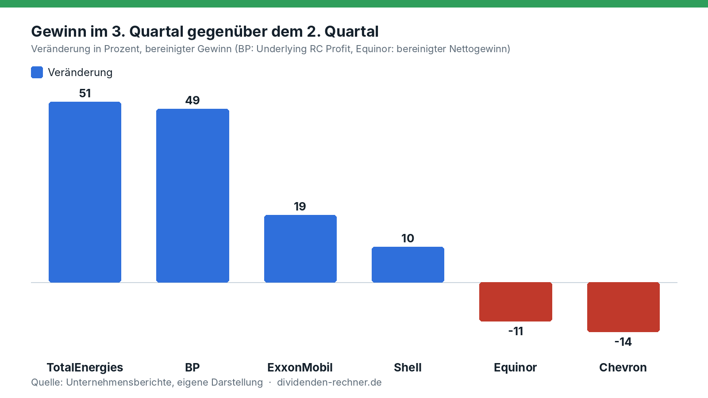
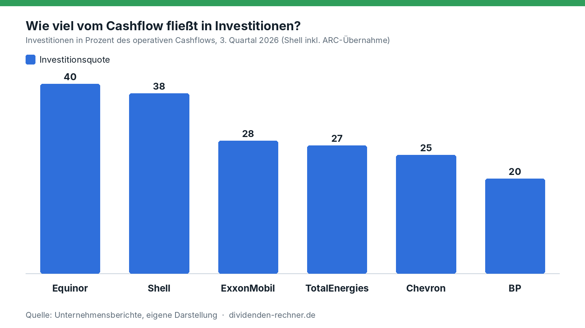
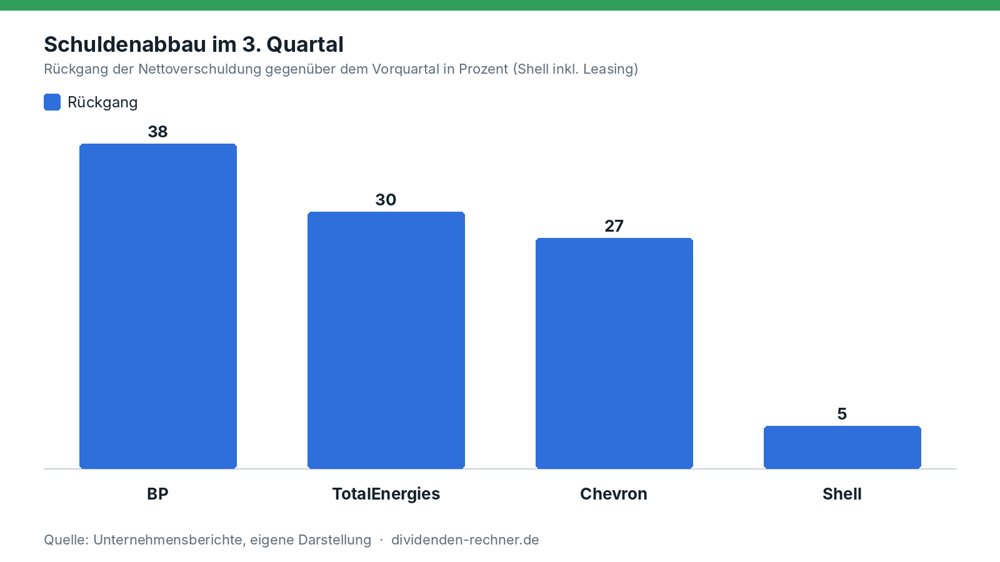
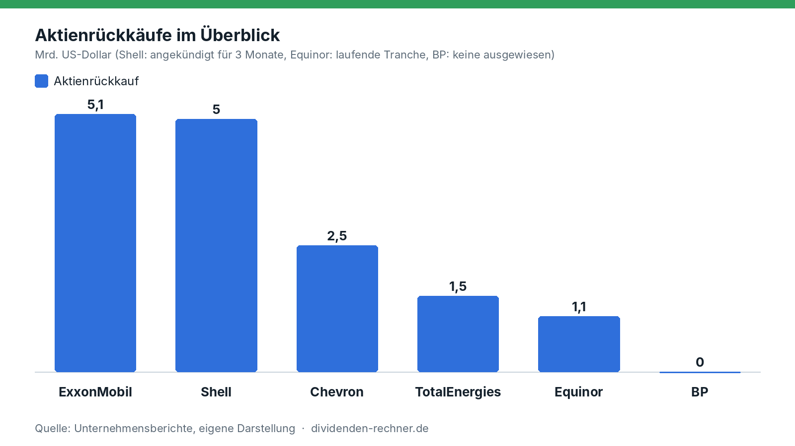
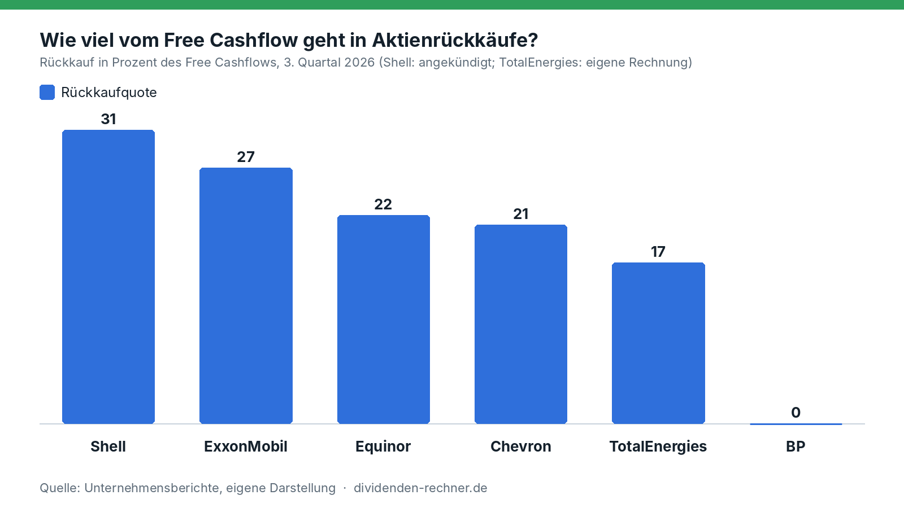

Analyse
Big Oil verdient am Krieg, tilgt aber zuerst Schulden
Exxon, Chevron, Shell, BP, TotalEnergies und Equinor verdienen am hohen Öl- und Dieselpreis. Ihre Q3-Berichte zeigen: Das Geld fließt zuerst in den Schuldenabbau, Rückkäufe und Dividenden steigen kaum.

Kurz gesagt
Kern: Die Ölkonzerne verdienen am Krieg, geben das Geld aber vor allem für den Abbau von Schulden aus.
- Gewinn: Gegenüber dem Vorjahr deutlich mehr, gegenüber dem Vorquartal gemischt (BP +49 %, Chevron −14 %).
- Verwendung: Die Nettoschulden sinken bei BP, TotalEnergies und Chevron um 27 bis 38 %. Höhere Rückkäufe gibt es nur bei Shell (+67 %).
- Dividenden: Sie steigen höchstens um 4 bis 6 %.
Geopolitik treibt Öl und Diesel
Der Iran-Krieg treibt den Ölpreis, der Ukraine-Konflikt den Dieselpreis. Brent kostet zuletzt rund 117 Dollar je Barrel, WTI rund 107 Dollar. Noch stärker als Rohöl verteuern sich Raffinerieprodukte wie Diesel und Heizöl.
Beide Konflikte verstärken sich. In Russland haben ukrainische Angriffe Raffinerien zerstört. Das Land, sonst ein großer Exporteur von Raffinerieprodukten, muss Berichten zufolge Benzin aus Indien einführen und hat seinen Benzinexportstopp bis Ende Januar 2027 verlängert. Gleichzeitig kommt aus dem Iran wieder mehr Öl per Schiff auf den Markt, auch in den USA kommt es an. Weil die Lager weltweit auf einem Tiefstand sind, füllt dieses Öl keine Tanks auf. Es geht sofort in die Raffinerien, die daraus Diesel und Heizöl machen. Das hält die Preise der Raffinerieprodukte hoch und mit ihnen die Margen der Konzerne.
Mit einer schnellen Entspannung rechnen die Konzerne nicht. TotalEnergies sieht den Ölpreis auch zu Beginn des vierten Quartals über 100 Dollar, BP plant das Quartal mit 110 Dollar je Barrel. Konzernchef Patrick Pouyanné spricht von historischen Raffineriemargen und einem „Bullenmarkt“ bei Gas.
Verdienen die Konzerne wirklich mehr?
Gegenüber dem Vorjahr ja, und zwar kräftig. Chevron hat den Nettogewinn von 3,54 auf 9,9 Mrd. Dollar fast verdreifacht (+180 %). BP verdient bereinigt 8,5 statt 2,2 Mrd. Dollar. Gegenüber dem zweiten Quartal ist das Bild gemischt:

Eigene Darstellung nach den Quartalsberichten von Q2 und Q3 2026. Bereinigte Gewinne, bei BP der „Underlying Replacement Cost Profit“, bei Equinor der bereinigte Nettogewinn.Der Brent-Preis fiel im Schnitt von 104 auf 97 Dollar je Barrel (−7 %), das drückt die Förderung. Dafür sprangen die Raffineriemargen: Shell nennt 42 statt 24 Dollar je Barrel, BP 46,7 Dollar. Wer stark in Raffinerie und Handel steckt, profitiert vom Dieselmangel. TotalEnergies meldet im Downstream mit 4,1 Mrd. Dollar einen Rekord, bei Shell steigt der Gewinn in Chemie und Produkten von 2,9 auf 3,9 Mrd. Dollar, ExxonMobil legt bereinigt um 19 % zu. Chevron und Equinor verdienen ihr Geld weiter überwiegend in der Förderung. Bei ihnen fällt der Gewinn, bei Chevron kommen Rückstellungen von 160 Mio. Dollar und negative Timing-Effekte dazu.
Was das bedeutet: Die Rekordgewinne hängen weniger am Ölpreis als an den Raffineriemargen. Sie sind damit stärker vom Dieselmangel abhängig als vom Rohölpreis.
Das Geld bleibt zum größten Teil übrig
Die Konzerne stecken nur 20 bis 40 % ihres operativen Cashflows in Investitionen. Equinor liegt mit 40 % vorn, gefolgt von Shell mit 38 %. BP investiert nur 20 %.

Eigene Darstellung nach den Quartalsberichten. Shell inklusive der Kosten der ARC-Übernahme, Equinor organische Investitionen.| Konzern | Operativer Cashflow | Investitionen | Free Cashflow | Veränderung zum Vorquartal |
|---|---|---|---|---|
| ExxonMobil | 25,7 Mrd. USD | 7,2 Mrd. USD | 19,1 Mrd. USD | +11 % |
| Shell | 21,0 Mrd. USD | 7,9 Mrd. USD | 16,3 Mrd. USD | −7 % |
| Chevron | 16,0 Mrd. USD | 4,0 Mrd. USD | 12,0 Mrd. USD | −34 % |
| BP | 14,8 Mrd. USD | 3,0 Mrd. USD | 11,8 Mrd. USD* | +51 %* |
| TotalEnergies | 12,3 Mrd. USD | 3,3 Mrd. USD | 9,0 Mrd. USD* | +25 % (Cashflow) |
| Equinor | 8,1 Mrd. USD | 3,3 Mrd. USD | 5,2 Mrd. USD | −5 % |
Quellen: Quartalsberichte der Konzerne. Der Free Cashflow ist bei ExxonMobil, Chevron und Shell die Angabe der Konzerne und enthält auch weitere Zahlungsströme wie Verkaufserlöse. Bei BP und TotalEnergies eigene Rechnung (Cashflow minus Investitionen). Bei TotalEnergies zählt der Cashflow ohne Betriebskapital, bei Equinor der Cashflow vor Kapitalausschüttung.
Was das bedeutet: 60 bis 80 % des Cashflows bleiben für Schulden und Aktionäre. Die Frage ist nur, in welche Richtung das Geld geht.
Schulden zuerst
Die Nettoverschuldung sinkt überall. BP drückt sie in einem Quartal von 22,3 auf 13,9 Mrd. Dollar (−38 %), TotalEnergies von 19,7 auf 13,8 Mrd. (−30 %), Chevron von 28,5 auf 20,7 Mrd. (−27 %). Bei Shell sind es 41,8 auf 39,7 Mrd. (−5 %), dort sind aber Leasingverbindlichkeiten eingerechnet, bei den anderen nicht. ExxonMobil hat die Nettoverschuldung seit Jahresbeginn um fast 11 Mrd. auf 22,1 Mrd. Dollar gesenkt*. Equinor meldet das Verhältnis von Nettoschulden zu eingesetztem Kapital: 3,8 % nach 10,4 % im Vorquartal.

Eigene Darstellung nach den Quartalsberichten. Shell inklusive Leasing. ExxonMobil und Equinor ohne vergleichbare Vorquartalswerte.Bei BP ist die Lage damit noch nicht erledigt. Mit Hybridanleihen, Leasing und dem Vergleich zur Ölpest im Golf von Amerika kommt der Konzern auf Finanzverpflichtungen von 44,3 Mrd. Dollar, nach 53,6 Mrd. im Vorquartal. BP selbst nennt sie weiter zu hoch. Die Nettoverschuldung von 13,9 Mrd. Dollar liegt aber schon unter dem Zielkorridor von 14 bis 18 Mrd. Dollar, den der Konzern für Ende 2027 genannt hat.
Was das bedeutet: Die Konzerne nutzen die hohen Preise, um ihre Bilanz zu reparieren. Das ist die Antwort auf die Jahre nach der Ölpreiskrise und dem Ölpreisverfall. Es macht die Dividenden sicherer.
Rückkäufe: nur Shell legt zu
Die Rückkäufe folgen nicht dem Gewinn. Shell erhöht kräftig, von 3,0 auf 5,0 Mrd. Dollar für die nächsten drei Monate (+67 %). ExxonMobil bleibt bei 5,1 Mrd. Dollar, Equinor bei 1,1 Mrd. Dollar je Tranche. Chevron kürzt von 3,1 auf 2,5 Mrd. Dollar (−20 %). TotalEnergies kauft im dritten Quartal für 1,5 Mrd. Dollar zurück, rund ein Drittel mehr als im Schnitt der ersten beiden Quartale (1,1 Mrd.). Für das vierte und das erste Quartal sind zusammen 2,5 Mrd. Dollar geplant, das sind 1,3 Mrd. je Quartal. BP kauft laut Präsentation nichts zurück.

Eigene Darstellung nach den Quartalsberichten. Shell: angekündigter Rückkauf für je drei Monate. TotalEnergies: Vorquartal als Schnitt der Quartale eins und zwei.Gemessen am Free Cashflow gibt Shell mit 31 % am meisten für Rückkäufe aus, vor ExxonMobil (27 %), Equinor (22 %) und Chevron (21 %). TotalEnergies liegt bei 17 %, BP bei null.

Eigene Darstellung nach den Quartalsberichten. Shell: angekündigter Rückkauf im Verhältnis zum Free Cashflow des Quartals. TotalEnergies: eigene Rechnung.Was das bedeutet: Rückkäufe sind die flexible Stellschraube. Sie lassen sich bei sinkenden Preisen kürzen, ohne dass ein Konzern ein Dividendenversprechen bricht. Chevron hat das im dritten Quartal vorgemacht. Wer auf Rückkäufe setzt, trägt das größere Risiko.
Dividenden: kleine Schritte
Die Dividenden steigen deutlich langsamer als die Gewinne. ExxonMobil hebt von 1,03 auf 1,07 Dollar je Aktie (+3,9 %), das 44. Jahr in Folge mit einer Erhöhung. TotalEnergies zahlt eine dritte Zwischendividende von 0,90 Euro, 5,9 % mehr als im Vorjahr. BP zahlt 8,66 US-Cent je Aktie, wie im Vorquartal und rund 4 %* mehr als vor einem Jahr. Chevron (1,78 Dollar) und Equinor (0,39 Dollar) zahlen unverändert. Shell zahlt 0,3906 Dollar und verspricht eine Dividende, die jedes Jahr um etwa 4 % steigt.
Was das bedeutet: ExxonMobil zahlt rund ein Viertel* seines Free Cashflows als Dividende (4,3 von 19,1 Mrd. Dollar). Das ist viel Luft, die Konzerne nutzen sie aber nicht für Sprünge. Die Dividenden gelten als gedeckt, auch wenn die Gewinne wieder fallen.
Wer setzt worauf?
| Konzern | Schwerpunkt | Das steckt dahinter |
|---|---|---|
| ExxonMobil | Aktionäre und Raffinerie | Ausschüttung 9,4 Mrd. USD im Quartal, Rückkäufe unverändert, Struktureinsparungen von 16,9 Mrd. USD seit 2019 |
| Chevron | Schuldenabbau und Förderung | Nettoschulden −27 %, Rückkäufe gekürzt, geplante Investitionen in Venezuela |
| Shell | Rückkäufe, Kanada und LNG | Rückkauf +67 %, Übernahme von ARC Resources, Investitionsentscheidung für LNG Canada Phase 2, Investitionen 2026 von 23 bis 25 Mrd. USD |
| BP | Bilanz | Nettoschulden −38 %, kein Rückkauf, Verkauf von Castrol (rund 6 Mrd. USD erwartet), Investitionen 13,5 bis 14,0 Mrd. USD |
| TotalEnergies | Gas und LNG, dazu Schulden | Vier Investitionsentscheidungen (Zypern, Nigeria, Abu Dhabi, Aserbaidschan), kauft 4 GW Onshore-Erneuerbare von Shell, Investitionen rund 15 Mrd. USD |
| Equinor | Förderwachstum | Förderziel 2026 von 3 auf rund 4 % Wachstum angehoben, Gaskraftwerk in den USA, Bay du Nord in Kanada, organisch rund 13 Mrd. USD |
Quellen: Quartalsberichte und Präsentationen der Konzerne. Keine Anlageberatung.
Was sich aus den Zahlen ablesen lässt
Die Bilanz entscheidet, was mit dem Geld passiert, nicht die Höhe des Gewinns. BP (+49 %) und TotalEnergies (+51 %) haben die größten Gewinnsprünge und erhöhen die Rückkäufe nicht oder kaum. Sie zahlen Schulden zurück (−38 % und −30 %). Chevron, dessen Gewinn fällt, kürzt die Rückkäufe um 20 %. Nur Shell erhöht sie deutlich, obwohl die Nettoverschuldung mit 39,7 Mrd. Dollar die höchste der sechs ist (mit Leasing gerechnet).
Bei den sechs Konzernen ergibt sich daraus ein klares Muster: Wo noch Altlasten drücken (BP), fließt das Geld in den Schuldenabbau. Wo die Bilanz aufgeräumt ist (Chevron, TotalEnergies, Equinor), laufen die Rückkäufe moderat weiter. Die Investitionsquote erklärt dagegen wenig: Equinor und Shell investieren 40 und 38 % ihres Cashflows, kaufen aber 22 und 31 % des Free Cashflows zurück, BP investiert 20 % und kauft nichts zurück.
Für Anleger heißt das: Die Dividenden sind sicherer geworden, ein Sprung ist aber nicht in Sicht. Die Rückkäufe schwanken stärker und hängen am Cashflow und damit an den Raffineriemargen. Brent liegt mit rund 117 Dollar deutlich über dem Quartalsdurchschnitt von 97 Dollar und über den 110 Dollar, mit denen BP plant. Ob die Konzerne ihr Geld dann anders verteilen, zeigen erst die nächsten Berichte. Keine Anlageberatung.
Quellen
- ExxonMobil, Quartalsberichte Q2 und Q3 2026 (SEC-Meldungen, Q2)
- Chevron, Quartalsberichte Q2 und Q3 2026 (SEC-Meldungen, Q2)
- Shell plc, Präsentation zum dritten Quartal 2026 (29.10.2026) und Pressemitteilung zum zweiten Quartal
- BP, Präsentation zum dritten Quartal 2026
- TotalEnergies, Pressemitteilung zum dritten Quartal 2026 (29.10.2026)
- Equinor, Quartalsbericht Q3 2026
- Berliner Zeitung, Berichte zu Kraftstoffengpässen in Russland: Benzinimporte aus Indien, Exportstopp bis Ende Januar 2027
Hinweis: Dieser Text dient der allgemeinen Information und ist weder Anlage-, Steuer- noch Rechtsberatung. Kapitalanlagen sind mit Risiken verbunden, bis hin zum Totalverlust.